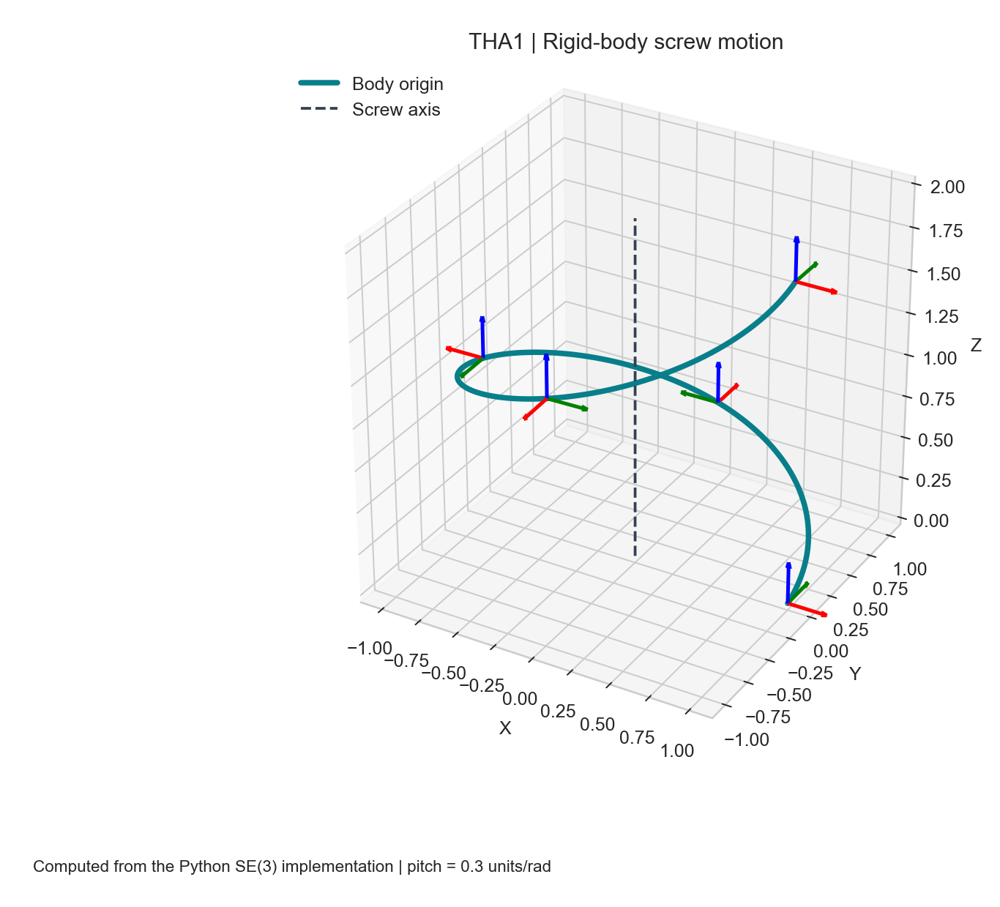
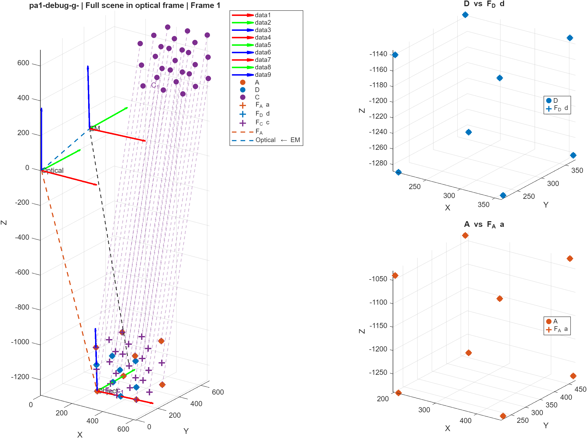
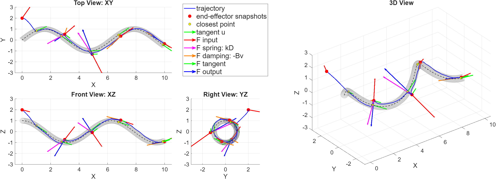

Four projects · One robotics foundation
Connecting the mathematics to robot behavior
Working with Min-Geun Park, I developed a series of Python and MATLAB projects exploring how robots represent motion, reach targets, interpret sensor measurements and respond to geometric constraints.
The work progresses from rotation and screw-motion routines to seven-joint manipulator kinematics, sensor calibration and virtual fixtures. Each project combines a mathematical model with numerical experiments and visualizations.
- Team
- Daniel Agbara and Min-Geun Park
- Tools
- Python, NumPy, Matplotlib and MATLAB
- Course
- Algorithms for Sensor-Based Robotics, Prof. Farshid Alambeigi
THA1 · Python
Representing rigid-body motion
We implemented conversions between rotation matrices, axis–angle coordinates, quaternions and Euler angles, then used screw theory to describe a moving coordinate frame. A screw axis combines rotation about a line with translation along it.

Round-trip tests check the consistency of the representations, including identity and 180-degree rotations. These edge cases matter because a formula that works for ordinary rotations may become numerically undefined at a special orientation.
THA2 · MATLAB
Controlling a redundant manipulator
Using a KUKA LBR iiwa 14 R820 model, we built forward kinematics and Jacobians with the Product of Exponentials formulation. Inverse-kinematics experiments compare Jacobian-based updates and explore how redundancy can support secondary objectives such as joint-limit avoidance and manipulability.
The four path recordings from THA2/results/videos are available below: Circle, Helix, Square and Raster. Play a video or use its download link. Playback preserves the original timing.
Path-following experiments
Original project recording. 5.3 seconds. Download MP4
Original project recording. 5.3 seconds. Download MP4
Original project recording. 5.3 seconds. Download MP4
Original project recording. 5.3 seconds. Download MP4
Explore THA2: kinematics, solver variants and trajectory recordings
THA3 · MATLAB
Connecting sensors to robot coordinates
The calibration work covers rigid point registration, electromagnetic and optical pivot calibration, and an eye-in-hand camera. For the camera, relative robot and camera motions form the equation AX = XB; a quaternion-based rotation estimate and translation least-squares solve recover X.

Noise-free and noisy pose tables are compared by reconstructing the observed object's pose in the robot base frame. Consistency across observations is useful evidence, but it must be interpreted alongside the frame conventions and the diversity of the calibration motions.
THA4 · MATLAB
Guiding motion through virtual geometry
Tubular and conical virtual fixtures combine attraction, damping and tangential guidance to influence simulated motion. A separate constrained inverse-kinematics formulation considers joint limits, target distance, tool orientation and a virtual wall.

A useful limitation
The constrained-IK report records temporary wall penetration for distant starting positions. A locally linearized constraint can be satisfied by the optimization step even when the actual nonlinear motion crosses the wall. This makes step size and nonlinear feasibility checks important parts of further development.
What the series taught me
These projects connected geometric reasoning with practical implementation choices: keeping coordinate conventions consistent, handling singular representations, choosing informative calibration poses and checking whether numerical constraints match physical behavior.
The repository includes a README for each project, reproducible entry points and an MIT license for our original code. Figures are identified as original project outputs or regenerated examples.